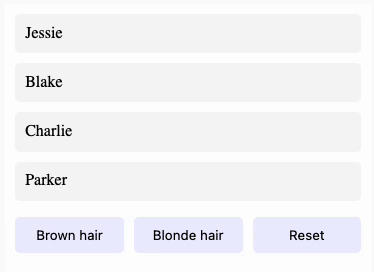
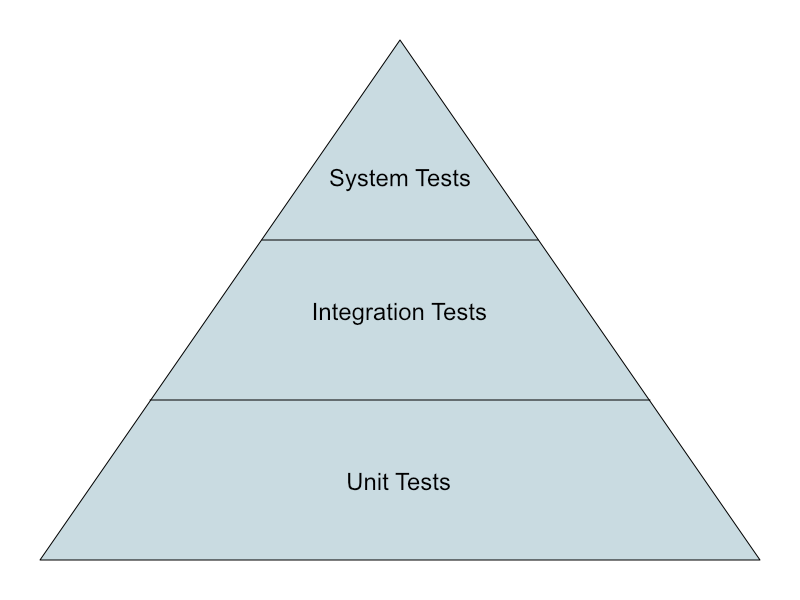

Web
Testing JavaScript Applications
## <i class="fas fa-tasks"></i> Overview of Today's Class - Online quiz about last week's lecture - Testing Javascript Applications - Unit tests - Integration tests - System tests
## <i class="fa-solid fa-graduation-cap"></i> Educational Objectives On completion of this part, students will be able to: - Describe the pros and cons of different types of tests - Write unit tests for a JavaScript application - Read and understand unit tests
Quiz
Object Oriented Javascript and more
## <i class="fas fa-question-circle"></i> Question 1 Quelle est la valeur imprimée par le programme suivant? ```js var obj = { "1": "one" } console.log(obj[1]); ``` Notes: <div class="spoiler"> L'output est `"one"`. En effet, l'objet est créé avec une propriété nommée `1` qui est de type String. Pour rappel, les clefs des propriétés d'un objet en Javascript sont de type string ou symbol. Lorsqu'on tente d'accédé à la propriété `1` de type `Number`, Javascript fait une conversion implicite de type pour comparer ce `1` au nom des propriétés de l'objet. L'objet a effectivement une propriété `"1"`, donc l'output est `"one"`. </div>
## <i class="fas fa-question-circle"></i> Question 2 Lequel ou lesquels des types suivants ne sont pas un type primitif (Oui, les majuscules sont justes !) - Symbol - Array - BigInt - Int - Undefined - String Notes: <div class="spoiler"> `Int` n'est pas un type primitif : Javascript représente tous ses nombres, avec ou sans virgule, avec le type `Number`. Il n'existe pas de type `Int`. `Array` n'est pas un type primitif : c'est une fonction qui créer un objet avec des propriétés spéciales, utilisé pour représenter des tableaux de données. C'est donc un objet. [Types primitifs](https://developer.mozilla.org/en-US/docs/Web/JavaScript/Data_structures#primitive_values) [Spécification des types en JS](https://262.ecma-international.org/6.0/index.html#sec-ecmascript-data-types-and-values) </div>
## <i class="fas fa-question-circle"></i> Question 3 Etant donnée une classe `Apple` qui hérite d'une classe `Fruit`, et ayant chacune une instance `apple` et `fruit`: ```js class Fruit {} class Apple extends Fruit {} let fruit = new Fruit(); let apple = new Apple(); ``` Quelles affirmations sont correctes ? (N.B. par prototype on entend la propriété `__proto__`) 1. Le prototype de `apple` est `Apple` 2. Le prototype de `Fruit` n'a pas de prototype, seuls les objets ont des prototypes 3. Le prototype de `Apple.prototype` est `Fruit.prototype` 4. Le prototype de `apple` est le prototype de `Fruit` 5. Le prototype de `apple` est `Apple.prototype` 6. Le prototype du prototype de `fruit` est `Object.prototype` 7. Le prototype de `fruit` est `Fruit.prototype` 8. Aucune des autres réponses Notes: <div class="spoiler"> Les réponses 3, 5, 6 et 7 sont correctes. Ce qui s'apparente à une classe (`Apple` et `Fruit`) est ici une fonction qui a pour but d'être utilisée comme constructeur (avec le mot clé `new`). Ces "fonction constructeur" ont une propriété `prototype` qui devient le prototype des instances créés via elles. Cette propriété `prototype` est un objet comme un autre, et a elle même également un prototype (propriété `__proto__`). Le prototype d'`Apple.prototype` pointe sur `Fruit.prototype`. Les instances `apple` et `fruit` de `Apple` et `Fruit` resp. sont des objets comme les autres, et leur propriété prototype pointe sur la propriété `prototype` de la classe/constructeur qui les a construits. Le prototype de `apple` est donc `Apple.prototype`. Veillez à bien comprendre la différence *sémantique* entre les objets qui sont des instances, les objets qui sont des constructeurs/classes, et ceux qui sont des prototypes. </div>
## <i class="fas fa-question-circle"></i> Question 4 Qu'affiche le code suivant ? ```js function doTwice(f) { f() f() } let human = { age: 32, getOlder() { this.age++ } } doTwice(human.getOlder) console.log(human.age) ``` - 32 - 33 - 34 - Une erreur est lancée - Aucune des autres réponses Notes: <div class="spoiler"> 32 En effet, la fonction `getOlder` n'est pas appelée comme une méthode (c'est à dire avec la notation `.`). Similairement aux constructeurs, qui sont de simples fonctions s'ils ne sont pas appelés avec `new`, une méthode n'est qu'une fonction si elle n'est pas appelée avec sur un objet. Ici, la fonction `getOlder` est appelée comme une fonction, et donc `this` est le global `this`, et donc la variable `age` ne sera pas définie (`undefined`). JavaScript faisant des conversions parfois inattendues, `undefined++` donne `NaN`. Dans tous les cas, ce sera une variable `age` définie dans le global this qui sera incrémentée, et non pas celle de l'objet, d'où le résultat de 32. [MDN Operators this](https://developer.mozilla.org/en-US/docs/Web/JavaScript/Reference/Operators/this) </div>
# <i class="fas fa-question-circle"></i> Question 4 Suite ```js function doTwice(f) { f.call(this); // bind this to the current context f.call(this); // bind this to the current context } let human = { age: 32, getOlder() { this.age++; } } doTwice.call(human, human.getOlder); // bind this to human console.log(human.age); ``` Notes: <div class="spoiler"> L'output sera 34 car on lie le `this` de `doTwice` à `human`, que l'on passe ensuite à `f`, qu'on reçoit en paramètre, via `f.call(this)` . </div>
# <i class="fas fa-question-circle"></i> Question 4 Suite (suite) ```js class Human { constructor(age) { this.age = age; } getOlder() { this.age++; } } function doTwice(f) { f.call(this); // bind this to the current context f.call(this); // bind this to the current context } let person = new Human(32); doTwice.call(person, person.getOlder); // bind this to person console.log(person.age); ``` Notes: <div class="spoiler"> L'output sera 34. Le fait de créer un object via un constructor ne change rien au problème de base. </div>
## <i class="fas fa-question-circle"></i> Question 5 Qu'affiche le code suivant ? ```js let person = { name: "John" }; let student = { studentId: 42 }; Object.assign(person, student); student.studentId = 43; console.log(person.studentId); ``` - 42 - 43 - undefined - Une erreur est lancée - Aucune des réponses ci-dessus Notes: <div class="spoiler"> L'output est `42`. En effet, `Object.assign` copie les propriétés de `student` dans `person`, mais ne crée pas de lien entre les deux objets. Donc lorsque la propriété `studentId` de `student` est modifiée, cela n'a aucun impact sur `person`. La méthode `Object.assign()` est utilisée afin de copier les valeurs de toutes les propriétés directes (non héritées) d'un objet qui sont énumérables sur un autre objet cible. Cette méthode renvoie l'objet cible. [Source](https://developer.mozilla.org/fr/docs/Web/JavaScript/Reference/Global_Objects/Object/assign) </div>
## <i class="fas fa-question-circle"></i> Question 6 Quelle est la valeur imprimée par le programme suivant? ```js var age = 20; var student = { age: 25, getAge: function() { return this.age; } }; var anotherStudent = { age: 30, getAge: function() { return this.age; } }; console.log(student.getAge.apply(anotherStudent)) ``` - 20 - 25 - 30 - undefined - Une erreur se produit car `getAge`, qui est une fonction, n'a pas de méthode `apply`. - Aucune des autres réponses Notes: <div class="spoiler"> L'output est `30`. En effet, `apply` permet d'appeler une fonction en spécifiant le contexte dans lequel elle est appelée. Ici, `student.getAge` est appelée avec `anotherStudent` comme contexte, donc `this` dans le corps de la fonction `getAge` pointe sur `anotherStudent`, et donc `this.age` vaut `30`. </div>
## <i class="fas fa-question-circle"></i> Question 7 Que se passe-t-il lorsque l'on ajoute une fonction au prototype d'une classe de la librairie standard? ```js let d = new Date(); Date.prototype.myFormat = function() { return "The day is " + this.toLocaleDateString('en-us', { year:"numeric", month:"short"}) } console.log(d.myFormat()) ``` - La fonction est copiée instantanément dans toutes les instances existantes de la classe - Une erreur a lieu car seules les instances futures de la classe hériteront la fonction - Cela est interdit - Aucune réponse correcte Notes: <div class="spoiler"> Cette action est parfaitement valide. Puisque toutes les instances de `Date` ont une propriété prototype qui pointe sur le prototype de `Date`, toute propriété définie sur le prototype, même après la création d'une instance, sera visible par celle-ci. Donc la fonction `myFormat` est bien visible par l'instance `d` de `Date`. En revanche, aucune réponse proposée n'est correcte, puisque la fonction n'est pas copiée dans les instances existantes, et qu'aucune erreur n'a lieu. </div>
## <i class="fas fa-question-circle"></i> Question 8 Quelle est la valeur imprimée par le programme suivant? ```js[] var arr = []; arr[0] = "zéro"; arr[2] = "deux"; arr[4] = "quatre"; for (var val in arr) { console.log(val) } ``` - 0 2 4 - 0 null 2 null 4 - 0 undefined 2 undefined 4 - 0 1 2 3 4 - 0 1 2 3 4 length - zéro deux quatre - zéro undefined deux undefined 4 - zéro null deux null quatre - Le code crée une out-of-bounds exception à la ligne 3 - Aucune autre réponse correcte Notes: <div class="spoiler"> L'output est `0 2 4`. En effet, les tableaux en Javascript sont des objets, et les indices sont des propriétés de l'objet. Donc `arr[0]` est équivalent à créer une propriété appelée `"0"` sur l'objet `arr`, et similairement avec `2` et `4`. La boucle `for ... in` itère sur les propriétés de l'objet, donc les indices `0`, `2` et `4` sont imprimés. Par contre l'array intercale des éléments vides entre les indices, c'est pourquoi le `length` est de `5` </div>
## <i class="fas fa-question-circle"></i> Question 9 Quelle est la valeur imprimée par le programme suivant? ```js var age = 20; function Student(age) { this.age = age return { age: 25 } } var student = new Student(30); console.log(student.age) ``` - 20 - 25 - 30 - undefined - Aucune des autres réponses Notes: <div class="spoiler"> L'output est `25`. En effet, le mot clé `new` crée un objet, et appelle la fonction `Student` avec ce nouvel objet comme contexte. La fonction `Student` crée une propriété `age` sur cet objet, mais retourne un autre objet. Si un constructeur ne retourne rien, c'est l'objet associé à son `this` qui sera retourné comme objet créé, mais si le constructeur retourne un objet, c'est celui-ci qui sera retourné. Donc l'output est `25`, puisque c'est la valeur de la propriété `age` de l'objet retourné par `Student`. </div>
## <i class="fas fa-question-circle"></i> Question 10 En quelques mots, pourquoi est-il plus judicieux de définir les méthodes sur le prototype de l'objet plutot que sur l'objet lui-même. Notes: <div class="spoiler"> En définissant les méthodes sur le prototype, on s'assure que toutes les instances de l'objet auront accès à la même fonction, et donc que la fonction ne sera pas dupliquée pour chaque instance. Cela permet d'économiser de la mémoire, et de s'assurer que toutes les instances auront accès à la même version de la fonction, même si celle-ci est modifiée après la création des instances. </div>
## <i class="fas fa-question-circle"></i> Question 11 Implémenter quelque chose de ressemblant à ce qui suit.  Les items doivent être des balises `<li>` avec un attribut nommé `hair` dont la valeur correspond à la couleur de cheveux de chaque personne dans la liste. Cliquer sur les boutons highlight les personnes aux cheveux de couleur correspondante. [Start](https://web-classroom.github.io/heig-vd-web-course/docs/99-examples/hairDomSelect.html) · [Solution](https://web-classroom.github.io/heig-vd-web-course/docs/99-examples/hairDomSelectSolution.html) Notes: <div class="spoiler"> ```html <!DOCTYPE html> <html> <body> <ul id="people_list"> <li hair="brown">Jessie</li> <li hair="blonde">Blake</li> <li hair="brown">Charlie</li> <li hair="gray">Parker</li> </ul> <div id="metadata"> <button class="brown" onclick="show('brown')"> Brown hair </button> <button class="blonde" onclick="show('blonde')"> Blonde hair </button> <button class="reset" onclick="reset()"> Reset </button> </div> </body> </html> ``` CSS ```css html { padding: 10px; --button-background: #eef; --button-hover-background: #dde; --highlighted-li-background: #ffa } #people_list { display: flex; flex-direction: column; gap: 10px; padding: 0; } li { list-style: none; padding: 10px; background: whitesmoke; border-radius: 5px; } #metadata { /* can also use display: grid; grid-template-columns: 1fr 1fr 1fr; */ display: flex; gap: 10px; } button { flex-grow: 1; border: none; padding: 10px; border-radius: 5px; cursor: pointer; background: var(--button-background) } button:hover { background: var(--button-hover-background) } .selected { background: var(--highlighted-li-background) } ``` JS ```js function show(color) { reset() elements = document.querySelectorAll(`li[hair="${color}"]`) elements.forEach((e) => { e.classList.add("selected") }) } function reset() { elements = document.querySelectorAll(`li`) elements.forEach((e) => { e.classList.remove("selected") }) } ``` </div>
## <i class="fas fa-question-circle"></i> Question 12 Modifiez le code suivant pour qu'il n'utilise plus la syntaxe de classes mais garde les mêmes fonctionnalités. En particulier, l'age ne doit pas être une valeur publique de l'objet. ```js class Human { #age constructor(age) { this.#age = age } getAge() { return this.#age } getOlder() { this.#age++ } } ``` Notes: <div class="spoiler"> Une solution consiste à utiliser un constructeur, qui lorsqu'on l'appelle avec `new` va retourner un nouvel object auquel on aura ajouté les deux méthodes `getAge` et `getOlder` via la référence `this` qui est liée à l'objet nouvellement créé. Afin de cacher la variable `age` on peut utiliser une variable locale à la fonction qui sera capturée par les méthodes `getAge` et `getOlder` (closure) et qui pourra ensuite être accédée et modifée par celles-ci. ```js function Human(age) { let priv_age = age this.getAge = function() { return priv_age } this.getOlder = function() { priv_age++ } } ``` </div>
## <i class="fas fa-question-circle"></i> Question 12 (solution) Une solution consiste à utiliser un constructeur, qui lorsqu'on l'appelle avec `new` va retourner un nouvel object auquel on aura ajouté les deux méthodes `getAge` et `getOlder` via la référence `this` qui est liée à l'objet nouvellement créé. Afin de cacher la variable `age` on peut utiliser une variable locale à la fonction qui sera capturée par les méthodes `getAge` et `getOlder` (closure) et qui pourra ensuite être accédée et modifée par celles-ci. ```js function Human(age) { let priv_age = age this.getAge = function() { return priv_age } this.getOlder = function() { priv_age++ } } ```
Testing JavaScript Applications
<img src="images/good_code.png" style="width: 30%;" /> https://xkcd.com/844/
## <i class="fas fa-question-circle"></i> How to write good code? *If you haven't tested it, assume it is broken!* But from where should I start? Recall the cornerstones of computational thinking: - Decomposition - Data Representation / Pattern recognition - Generalization / Abstraction - Algorithm
*The whole is greater than the sum of its parts.* **Aristotle**
## <i class="fas fa-check-square"></i> Test automation In software testing, test automation is the use of a software separate from the software being tested to control the execution of tests and the comparison of actual outcomes with predicted outcomes. https://en.wikipedia.org/wiki/Test_automation
## <i class="fas fa-file-code"></i> Grab the code https://github.com/web-classroom/test-automation
## <i class="fas fa-check-square"></i> Types of tests  Notes: - **Unit tests**: Test a **separable unit of software** for correctness, independently of the larger software System. That unit is usually the smallest testable part of an application, and has a single and clear responsibility. - **Integration tests**: Individual units of software that pass unit tests are **assembled together into components**. Integration tests ensure that the components made of different parts work correctly together. The units are considered correct, and the goal is to test that the interaction between them is correct for what we want the component to do. - **System tests**: All the component that pass the integration tests are **assembled together into the system**. System tests verify the **end-to-end functionality** of the system. They are usually **hard to automate** and very expensive to implement and execute.
## <i class="fas fa-cog"></i> Unit tests - Test a **separable unit of software** for correctness, independently of the larger software System - Employed as a **low-level** specification to ensure that a function or module performs as expected - Usually fast to implement and execute - **Example:** *testing that the subscriber's email is valid*
## <i class="fas fa-cogs"></i> Integration Tests - Individual units of software that pass unit tests are **assembled together into components** - Integration tests ensure that the components made of different parts work well together - Sometimes slow to implement and execute - Might require to mock some dependencies, e.g. a messaging queue to some other part of the system - **Example:** *test that the email was persisted in the subscriber table of the database*
## <i class="fas fa-car"></i> System Tests - All the component that pass the integration tests are **assembled together into the system** - System tests verify the **end-to-end functionality** of the system - Usually **hard to automate** and very expensive to implement and execute - Mocking some parts of application is sometimes needed, for example a third party system - **Example:** test that the user can subscribe to the mailing list by accessing the server from the chrome browser
## <i class="fas fa-clipboard"></i> Key takeaways - If you haven't tested it, assume it is broken! - Decomposition is the best friend of testable code - When testing, write: - A lot of unit tests - Some integration tests - Few selected system tests
<img src="images/sre.jpg" /> https://landing.google.com/sre/books/ **Chapter 17:** Testing for Reliability
## <i class="fas fa-question-circle"></i> Questions